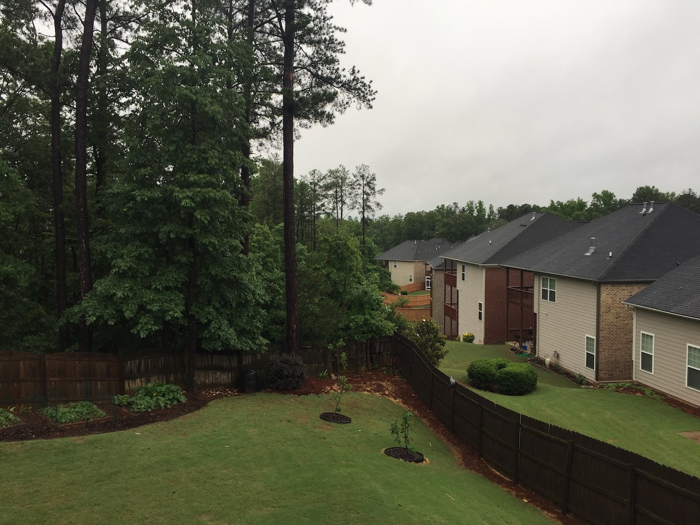
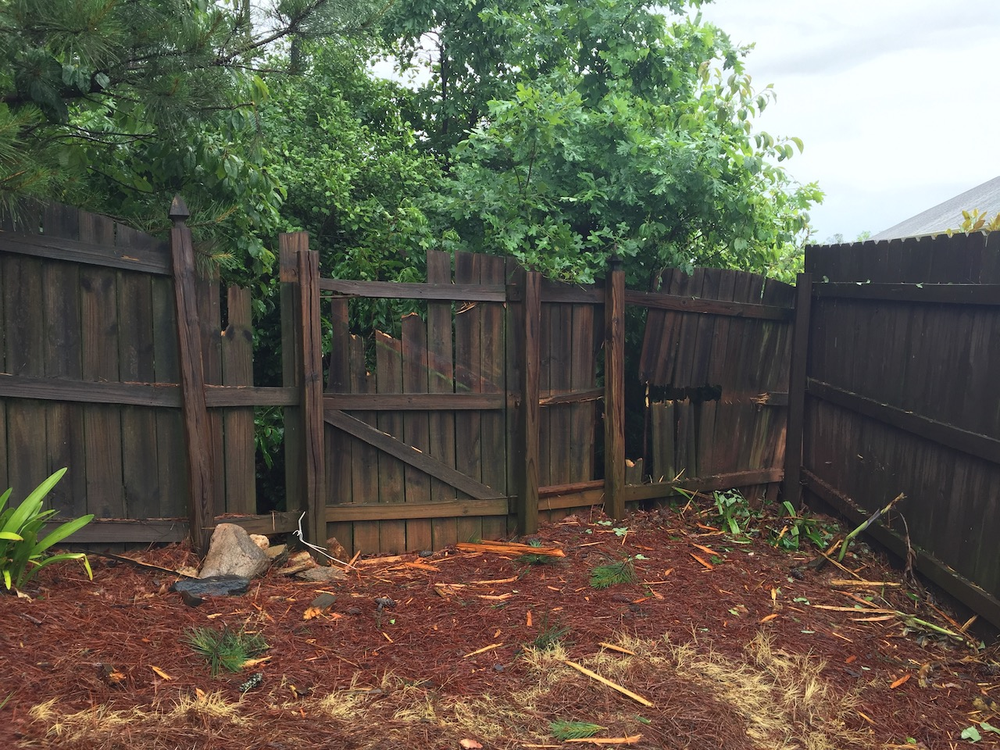

Raspberry Pi Sprinkler Controller
Lightening Strikes
This all started when lightening took out my Hunter sprinker controller along with a few other devices, part of my fence, and a very larger pine tree. The strike started at the top on the largest pine here...
And continued along the fence, leaving it completely destroyed.
The old Hunter sprinkler controller.

So, I cleaned out the controller box, making a few small changes to the mounting points.

I cut and sanded three wooden blocks to use as my new mounting points, one the Pi and two the relay board.
Mounting blocks installed. Ready for the Pi and relay board.

Pi and Relay board installed

Installed and wired up. Ready to go :)